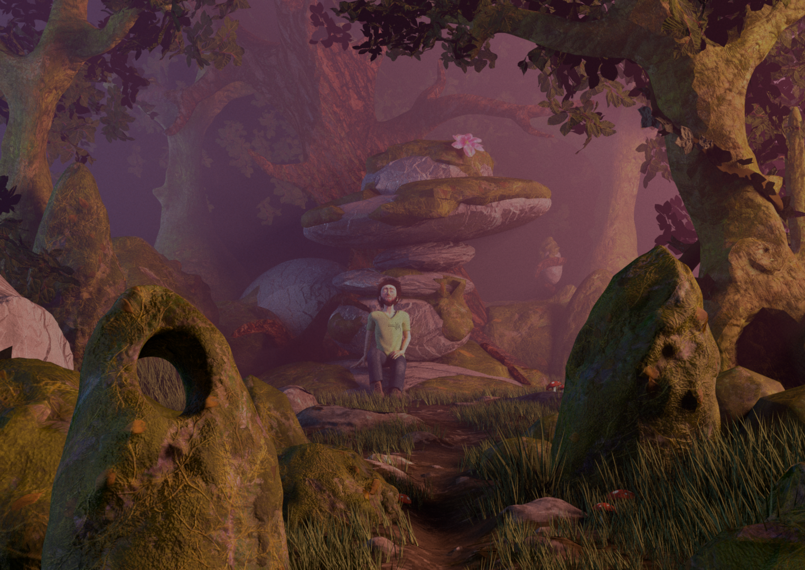

Jonathan Julou
School Projects
CS-440
Website of the course, with each year's competition : https://rgl.epfl.ch/courses
For the project, I modified the Nori codebase to add octree raytracing, various sampling methods, materials and integrators, up to multi-importance sampling.
In addition, student had to add some extensions, so I added textures and bump mapping.
For the final competition, student had to set up a scene and render it with their path-tracer.
I sculpted my scene in Blender, using free textures from textures.com, and reusing the humanoid model I made for the Pix'Art film, which had a clean topology and was already rigged.
Since I could not add participating media in time, the volumes are done with a succession of alpha-hashed planes and some subsurface scattering is painted directly on the human's texture.
My final render for the competition (with TSV adjustments):
